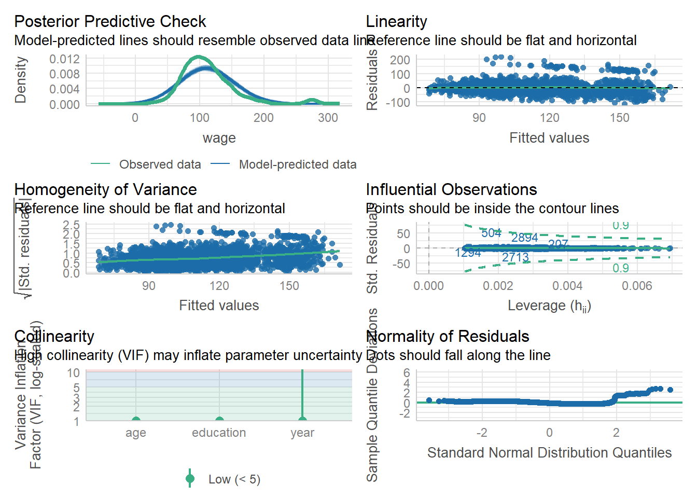

year age maritl race
Min. :2003 Min. :18.00 1. Never Married: 648 1. White:2480
1st Qu.:2004 1st Qu.:33.75 2. Married :2074 2. Black: 293
Median :2006 Median :42.00 3. Widowed : 19 3. Asian: 190
Mean :2006 Mean :42.41 4. Divorced : 204 4. Other: 37
3rd Qu.:2008 3rd Qu.:51.00 5. Separated : 55
Max. :2009 Max. :80.00
education region jobclass
1. < HS Grad :268 2. Middle Atlantic :3000 1. Industrial :1544
2. HS Grad :971 1. New England : 0 2. Information:1456
3. Some College :650 3. East North Central: 0
4. College Grad :685 4. West North Central: 0
5. Advanced Degree:426 5. South Atlantic : 0
6. East South Central: 0
(Other) : 0
health health_ins logwage wage
1. <=Good : 858 1. Yes:2083 Min. :3.000 Min. : 20.09
2. >=Very Good:2142 2. No : 917 1st Qu.:4.447 1st Qu.: 85.38
Median :4.653 Median :104.92
Mean :4.654 Mean :111.70
3rd Qu.:4.857 3rd Qu.:128.68
Max. :5.763 Max. :318.34
head(Wage)
year age maritl race education region
231655 2006 18 1. Never Married 1. White 1. < HS Grad 2. Middle Atlantic
86582 2004 24 1. Never Married 1. White 4. College Grad 2. Middle Atlantic
161300 2003 45 2. Married 1. White 3. Some College 2. Middle Atlantic
155159 2003 43 2. Married 3. Asian 4. College Grad 2. Middle Atlantic
11443 2005 50 4. Divorced 1. White 2. HS Grad 2. Middle Atlantic
376662 2008 54 2. Married 1. White 4. College Grad 2. Middle Atlantic
jobclass health health_ins logwage wage
231655 1. Industrial 1. <=Good 2. No 4.318063 75.04315
86582 2. Information 2. >=Very Good 2. No 4.255273 70.47602
161300 1. Industrial 1. <=Good 1. Yes 4.875061 130.98218
155159 2. Information 2. >=Very Good 1. Yes 5.041393 154.68529
11443 2. Information 1. <=Good 1. Yes 4.318063 75.04315
376662 2. Information 2. >=Very Good 1. Yes 4.845098 127.11574
Açıklama:Wage veri seti maaş, yaş, eğitim gibi değişkenleri içerir. str() ile yapısını incelemek faydalı olur.
2. Eksik Değerleri İncele
colSums(is.na(Wage))
year age maritl race education region jobclass
0 0 0 0 0 0 0
health health_ins logwage wage
0 0 0 0
Açıklama: Hangi sütunda kaç tane NA değeri olduğunu öğrenmiş olduk.
Açıklama: Modelin tahmin başarımını ölçmek için hata metrikleri kullanıldı.
BONUS: Artık Analizi & Varsayım Kontrolü
library(performance)check_model(model2)

Açıklama: Model varsayımlarını test etmek için check_model() fonksiyonu kullanıldı. Lineerlik, normal dağılım, sabit varyans ve etkili gözlemler görsel olarak incelenebilir.